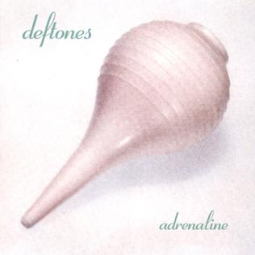
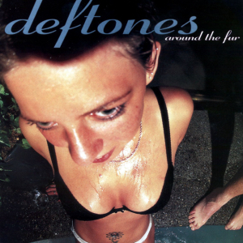

|
|
 |
 |
O Deftones é uma banda norte-americana de metal alternativo que surgiu na cidade de Sacramento, Califórnia, no final da década de 1980. Com uma sonoridade que mescla elementos de metal, rock alternativo, shoegaze e experimentalismo, a banda se destacou não apenas pela sua música, mas também pela sua capacidade de reinventar o som pesado.
Chino Moreno, vocalista carismático e líder da banda, juntamente com Stephen Carpenter (guitarra), Abe Cunningham (bateria), Sergio Vega (baixo) e Frank Delgado (teclados e samples), criaram um som único que desafiou as convenções do metal tradicional.
Desde o lançamento de seu álbum de estreia, "Adrenaline", em 1995, o Deftones conquistou fãs em todo o mundo com sua mistura de agressividade e melodia. Hits como "Bored" e "My Own Summer (Shove It)" rapidamente se tornaram clássicos do gênero.
|  |
A banda alcançou ainda mais sucesso com álbuns aclamados pela crítica, como "Around the Fur" e "White Pony", este último rendendo-lhes um Grammy pelo single "Elite". A sonoridade única do Deftones continuou a evoluir ao longo dos anos, explorando novas texturas e experimentando com diferentes estilos musicais.
|  |
Apesar de enfrentarem desafios pessoais e profissionais ao longo do caminho, incluindo a trágica morte do baixista original Chi Cheng, em 2013, o Deftones perseverou e continuou a produzir música inovadora que ressoa com uma base de fãs dedicada.